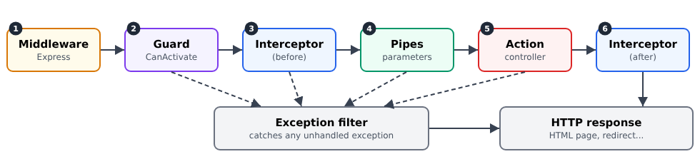
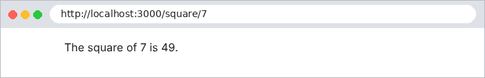
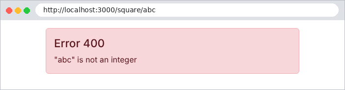
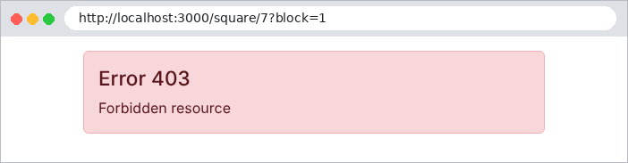
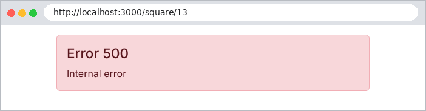

7. The Lifecycle of a Request
Between the arrival of a request and the execution of the action, [NestJS] involves several types of objects, each with a specific role. We’ve already encountered some of them: middleware ([res.locals], [cookie-parser]) and pipes ([ParseIntPipe], [ValidationPipe]). The case study uses all five:

Object | Role | In the case study |
middleware | prepare the request; does not yet know the action | reading cookies, language, flash message |
guard | authorize or deny access to the action | Authentication (JWT), roles |
interceptor | code before and after the action | the logged-in user, exposed to views |
pipe | convert and validate a parameter | [ParseIntPipe] |
exception filter | Convert an exception into a response | Error pages HTML, redirection to /login |
7.1. Example 24: The Five Steps
Example 24 has an action that calculates the square of a number and one object of each type. Each writes a line to the console, so we can see the order in which they occur.
The file [src/logger.middleware.ts]:
| import { Injectable, NestMiddleware } from '@nestjs/common';
import { NextFunction, Request, Response } from 'express';
// 1. the MIDDLEWARE: the first to see the request. It does not know yet
// which action will handle it
@Injectable()
export class LoggerMiddleware implements NestMiddleware {
use(req: Request, res: Response, next: NextFunction): void {
console.log(`\n--- ${req.method} ${req.originalUrl}`);
console.log('1. middleware');
next(); // we hand over to the rest of the chain
}
}
|
- Line 7: a middleware [NestJS] is a class that implements [NestMiddleware]. A simple function, as in the previous examples, would also work;
- Line 11: The middleware must call [next()] to pass control to the next step (or send a response itself). Otherwise, the request remains blocked.
The file [src/app.module.ts]:
| import { MiddlewareConsumer, Module, NestModule } from '@nestjs/common';
import { CalcController } from './calc.controller';
import { LoggerMiddleware } from './logger.middleware';
@Module({
controllers: [CalcController],
})
export class AppModule implements NestModule {
// a class middleware is registered in the module
configure(consumer: MiddlewareConsumer): void {
consumer.apply(LoggerMiddleware).forRoutes('*');
}
}
|
Lines 10–12: A class-based middleware registers itself in a module that implements [NestModule]. [forRoutes('*')] applies it to all routes.
The file [src/block.guard.ts]:
| import { CanActivate, ExecutionContext, Injectable } from '@nestjs/common';
import { Request } from 'express';
// 2. the GUARD: decides whether the request may reach the action.
// false -> NestJS throws a ForbiddenException (403)
@Injectable()
export class BlockGuard implements CanActivate {
canActivate(context: ExecutionContext): boolean {
const req = context.switchToHttp().getRequest<Request>();
// the guard knows the targeted action (which the middleware did not)
console.log(`2. guard (targeted action: ${context.getHandler().name})`);
return req.query.block !== '1';
}
}
|
- line 7: a guard implements [CanActivate];
- line 8: its method [canActivate] receives the execution context and returns [true] (the request continues) or [false] ([NestJS] raises a [ForbiddenException], code 403);
- line 11: unlike the middleware, the guard knows the target action ([getHandler()]) and its controller ([getClass()]). This is what allows a guard to read the decorators applied to the action (see [@Roles], next chapter).
The file [src/timing.interceptor.ts]:
| import { CallHandler, ExecutionContext, Injectable, NestInterceptor } from '@nestjs/common';
import { Observable, tap } from 'rxjs';
// 3. the INTERCEPTOR: some code BEFORE the action, and AFTER it
@Injectable()
export class TimingInterceptor implements NestInterceptor {
intercept(context: ExecutionContext, next: CallHandler): Observable<unknown> {
console.log('3. interceptor (before)');
const start = Date.now();
// next.handle() runs what follows: pipes then action. The result
// of the action arrives in the returned stream (Observable)
return next.handle().pipe(tap(() => console.log(`6. interceptor (after, ${Date.now() - start} ms)`)));
}
}
|
- line 6: an interceptor implements [NestInterceptor];
- line 8: the code placed before [next.handle()] executes before the action;
- line 12: [next.handle()] executes the rest (pipes followed by the action) and returns a stream [RxJS] ([Observable]) that will produce the result of the action. The [tap] operator executes code after the action, without modifying its result (the [map] operator would allow it to be modified).
The file [src/integer.pipe.ts]:
| import { BadRequestException, Injectable, PipeTransform } from '@nestjs/common';
// 4. the PIPE: converts and validates a parameter of the action
@Injectable()
export class IntegerPipe implements PipeTransform<string, number> {
transform(value: string): number {
console.log(`4. pipe (received value: "${value}")`);
const n = Number(value);
if (!Number.isInteger(n)) {
throw new BadRequestException(`"${value}" is not an integer`);
}
return n;
}
}
|
A pipe similar to [ParseIntPipe] (see Example 12).
The file [src/error-page.filter.ts]:
| import { ArgumentsHost, Catch, ExceptionFilter, HttpException, HttpStatus } from '@nestjs/common';
import { Response } from 'express';
// x. the EXCEPTION FILTER: receives any unhandled exception, wherever
// it comes from (guard, pipe, action...), and builds the response.
// @Catch() without an argument: all the exceptions
@Catch()
export class ErrorPageFilter implements ExceptionFilter {
catch(exception: unknown, host: ArgumentsHost): void {
const res = host.switchToHttp().getResponse<Response>();
const status = exception instanceof HttpException ? exception.getStatus() : HttpStatus.INTERNAL_SERVER_ERROR;
const message = exception instanceof HttpException ? exception.message : 'Internal error';
console.log(`x. exception filter (${status}: ${message})`);
// an HTML page rather than the default NestJS JSON response
res.status(status).render('error', { status, message });
}
}
|
- Line 7: [@Catch()] without an argument: the filter receives all exceptions. [@Catch(HttpException)] would limit it to the exceptions in HTTP;
- Line 9: The [catch] method receives the exception and a [host] object that provides access to the request and the response;
- Line 11: A [HttpException] contains its status code. Any other exception (a programming error, an unreachable database) results in a 500 error;
- line 15: instead of the default JSON, the filter displays a HTML page with the correct status code.
The file [src/main.ts]:
| import { NestFactory } from '@nestjs/core';
import { NestExpressApplication } from '@nestjs/platform-express';
import { dirname, join } from 'path';
import { AppModule } from './app.module';
import { TimingInterceptor } from './timing.interceptor';
import { ErrorPageFilter } from './error-page.filter';
async function bootstrap() {
const app = await NestFactory.create<NestExpressApplication>(AppModule, { logger: ['error', 'warn'] });
app.useStaticAssets(join(dirname(require.resolve('bootstrap/package.json')), 'dist'), { prefix: '/bootstrap/' });
app.setBaseViewsDir(join(__dirname, '..', 'views'));
app.setViewEngine('hbs');
// a GLOBAL interceptor and filter: they apply to all the routes
app.useGlobalInterceptors(new TimingInterceptor());
app.useGlobalFilters(new ErrorPageFilter());
await app.listen(3000);
console.log('Server started on http://localhost:3000');
}
bootstrap();
|
- line 9: we filter the messages from [NestJS] down to errors and warnings, so we can see our own more clearly;
- lines 14–15: the interceptor and filter are global; they apply to all actions.
The file [src/calc.controller.ts]:
| import { Controller, Get, Param, Render, UseGuards } from '@nestjs/common';
import { BlockGuard } from './block.guard';
import { IntegerPipe } from './integer.pipe';
@Controller('square')
@UseGuards(BlockGuard) // the guard applies to all the actions of the controller
export class CalcController {
@Get(':n')
@Render('square')
square(@Param('n', IntegerPipe) n: number): object {
console.log(`5. action square(${n})`);
if (n === 13) {
throw new Error('13 brings bad luck'); // an "unexpected" error
}
return { n, square: n * n };
}
}
|
- line 6: [@UseGuards] applies a guard to all controller actions (it can also be applied to a single action);
- line 10: the pipe converts the parameter;
- lines 12–14: an “unexpected” error, to see the filter in action.
Four requests: a normal calculation, an invalid parameter, a request blocked by the guard, and the unexpected error. The server console:
| --- GET /square/7
1. middleware
2. guard (targeted action: square)
3. interceptor (before)
4. pipe (received value: "7")
5. action square(7)
6. interceptor (after, 2 ms)
--- GET /square/abc
1. middleware
2. guard (targeted action: square)
3. interceptor (before)
4. pipe (received value: "abc")
x. exception filter (400: "abc" is not an integer)
--- GET /square/7?block=1
1. middleware
2. guard (targeted action: square)
x. exception filter (403: Forbidden resource)
--- GET /square/13
1. middleware
2. guard (targeted action: square)
3. interceptor (before)
4. pipe (received value: "13")
5. action square(13)
x. exception filter (500: Internal error)
|
This log shows:
- the order of the steps: middleware, guard, interceptor (before), pipe, action, interceptor (after);
- an exception interrupts the chain, wherever it occurs, and the filter generates the response: the guard denies access (403), the pipe denies access (400), the action fails (500).
The resulting pages:




The exception filter in the case study ([web/html-exception.filter.ts]) follows this pattern, with one exception: a 401 error (user not logged in) does not display an error page but redirects to the login page.